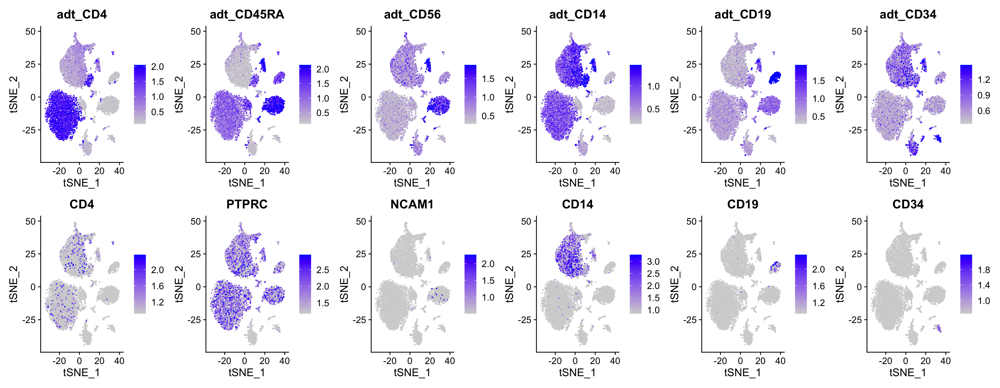
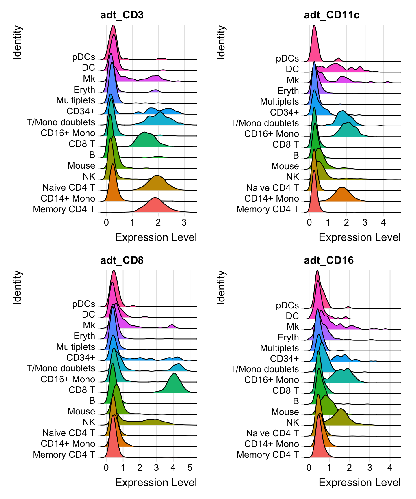
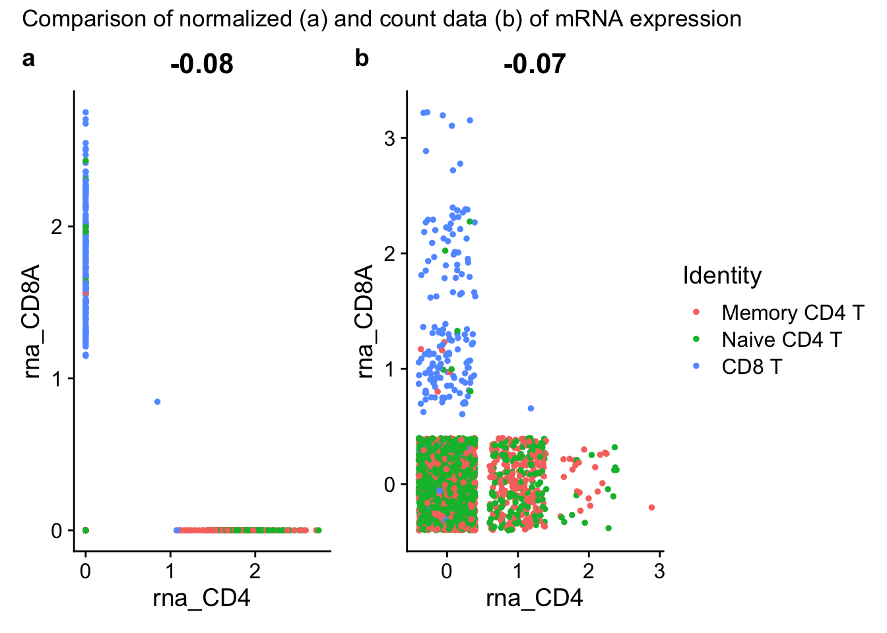
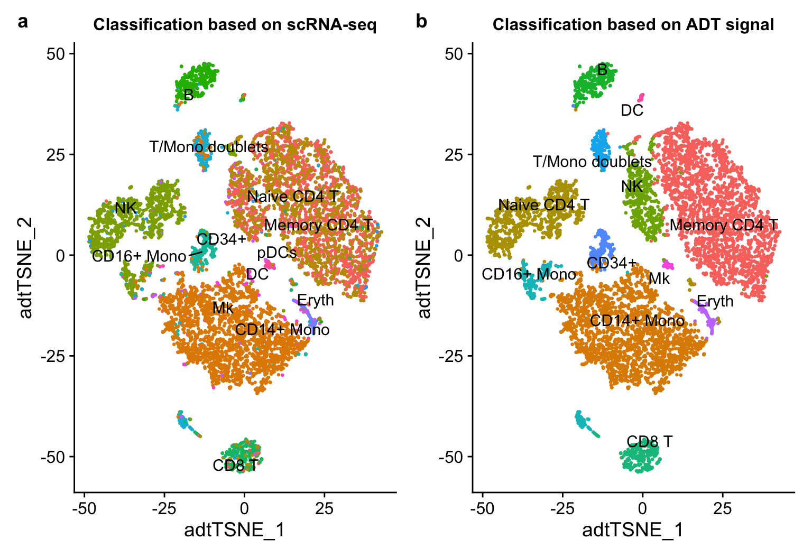

CITE-seq is a method developed at the New York Genome Center for adding phenotypic data in the form of cell-surface protein expression to the RNA expression data that comes from single-cell RNA sequencing Nat Methods 14, 865–868 (2017). This is accomplished by incubating the cells with DNA oligonucleotide bar-coded antibodies that recognize epitopes on cell surface proteins, and then perform single-cell sequencing. The DNA-tags of the antibodies get indexed using the oligo-dT primers on the beads of the single-cell emulsion, allowing the antibody-derived tags to be mapped back to the scRNA-seq data of the single cells. Thus, RNA expression data and cell-surface protein data can be combined in one experiment for a multi-omics analysis.
This experiment
CITE-seq using data from Stoeckius, et al. (Nat Methods 14, 865–868 (2017) 10.1038/nmeth.4380) obtained from GEO series GSE100866.
Seurat multi-modal clustering will be used to cross-validate the cell-surface protein data with the RNA-seq data using a purposely-mixed two-species (human and mouse) immune cell sample.
Illustration of the DNA-barcoded antibodies used in CITE-seq. (b) Antibody-oligonucleotide complexes appear as a high-molecular-weight smear when run on an agarose gel (1). Cleavage of the oligo from the antibody by reduction of the disulfide bond collapses the smear to oligo length (2). (c) Drop-seq beads are microparticles with conjugated oligonucleotides comprising a common PCR handle, a cell barcode, followed by a unique molecular identifier (UMI) and a polyT tail. (d) Schematic illustration of CITE-seq library prep in Drop-seq (downstream of Fig. 1b). Reverse transcription and template switch is performed in bulk after emulsion breakage. After amplification, full length cDNA and antibody-oligo products can be separated by size and amplified independently (also shown in d) (e) Reverse transcription and amplification produces two product populations with distinct sizes (left panel). These can be size separated and amplified independently to obtain full length cDNAs (top panel, capillary electrophoresis trace) and ADTs (bottom panel, capillary electrophoresis trace).
CollapseSpeciesExpressionMatrix() is a convenience function for slimming down a multi-species expression matrix, when only one species is primarily of interest. Given the default parameter of ncontrols = 100, this command keeps only the top 100 features detected from each species in each sample. This matrix went from 36280 to 20501 features, which is a 43% reduction.
Figure 1: Elbow plot or scree plot of principle components computed from scRNA-seq counts
The elbow plot above shows some interesting PC influence behavior. There are some clusters PCs (like 4-7, 8-10, and 11-13) that make it less clear where the “elbow” of influence trend is. To be very safe, we can keep up to PC 25, where the trend approaches a horizontal line.
cbmc <-FindNeighbors(cbmc, dims =1:25)
Computing nearest neighbor graph
Computing SNN
cbmc <-FindClusters(cbmc, resolution =0.8)
Modularity Optimizer version 1.3.0 by Ludo Waltman and Nees Jan van Eck
Number of nodes: 8617
Number of edges: 343912
Running Louvain algorithm...
Maximum modularity in 10 random starts: 0.8613
Number of communities: 19
Elapsed time: 0 seconds
The following cluster identities are provided for us from the authors of the paper. A cell-type classifier would need to be run on the data to label the bar-codes (droplets) with their identifiers.
Now we can repeat the pre-processing (normalization and scaling) steps that we typically run with RNA, but modifying the ‘assay’ argument.
(For CITE-seq data, the Broad does not recommend typical Log-normalization. Instead, they use a centered log-ratio (CLR) normalization, computed independently for each feature. This is a slightly improved procedure from the original publication.)
Figure 3: Set I: Juxtaposed heat map of cell-surface antibody-derived signal (top row) versus mRNA-seq (bottom row) of correspoding proteins and their mRNAs
# Compare gene and protein expression levels for the other 6 antibodies.FeaturePlot(cbmc,features =c("adt_CD4", "adt_CD45RA", "adt_CD56","adt_CD14", "adt_CD19", "adt_CD34","CD4", "PTPRC", "NCAM1","CD14", "CD19", "CD34"),min.cutoff ="q05", max.cutoff ="q95", ncol =6)

Figure 4: Set II: Juxtaposed heat map of cell-surface antibody-derived signal (top row) versus mRNA-seq (bottom row) of correspoding proteins and their mRNAs
As we can see from the above figures Figure 3 and Figure 4, in some cases, the same clusters / tSNE neighborhoods have high correspondence for the mRNA and the cell surface protein (e.g. CD3, CD4), but the penetrance (proportion of the cells) showing both antibody and mRNA feature may not be 100%; in other cases, some clusters expressing the cell-surface marker do not show much mRNA level (e.g. CD11, CD56, CD19, CD34), and vice-versa (e.g. CD45RA).
These side-by-side comparison illustrate the strength of the evidence added to the experiment by analyzing for both mRNA and protein.
RidgePlot(cbmc, features =c("adt_CD3", "adt_CD11c", "adt_CD8", "adt_CD16"), ncol =2)

Figure 5: Stacked density plots showing this distribution of antibody-derived tag (ADT) signal in each scRNA-seq cell class for four cell-sirface markers: CD3, CD11c, CD8, and CD16.
Why may these differences occur?
One reason the “levels” between protein and mRNA could differ is that one of them is samples a very low count, and the normalization is concealing that fact.
Figure 6: One gene, CD3, displayed as either antibody-derived tags (left side) or mRNA (right side), with x-axis in units of normalized expression (top half) or raw, un-normalized counts (bottom) for all cell classes.
As Figure 6 shows, the raw counts (which are UMI-collapsed) of the antibody-derived tags has a very large dynamic range with large values (around 1000 to 2000 counts) for positive cells, whereas the mRNA raw counts shows discretization close to 0, with the plurality of cells in each classification having 0 counts, followed by 1, then 2, then 3… counts. This shows that a low number of mRNA molecules either present in the cells (or incorporated into the single cell NGS library) is limiting the sensitivity of the scRNA-seq method at identifying key transcripts in the cells; ADTs have far less of this problem, where there is a large difference (from ~ 0 to about 1000 counts) between negative and positive cells, suggesting the antibody method is less susceptible to Poisson / binomial sampling noise and uncertainty.
Figure 7: Scatter plot showing the correlation (in title) of CD3 vs CD19 antibody-derived tag (ADT) signal across ovserved cells.
Figure 7 shows that CD3 and CD19 are poorly correlated, with CD19 displaying high antibody signal in B cells, and CD3 showing higher signals in the T-cell classes (memory CD4+ T cells, naive CD4 T cells, and some T cell - monocyte doublets). This scatter plot of ADTs could function similarly to a flow plot, complete with gates.
In Figure 9, the pearson correlation of CD4 and CD8 antibody CITE-seq signal is -0.79, indicating these are signals are significantly anti-correlated, which is consistent with the immunology of T cells vs B cells. While the normalized data (a) look pretty separate / disjoint, the count data (b) are even more orthogonal, though there is less space separating the clusters in b than in a.
(FeatureScatter(tcells, feature1 ="rna_CD4", feature2 ="rna_CD8A", jitter =TRUE) |FeatureScatter(tcells, feature1 ="rna_CD4", feature2 ="rna_CD8A", slot ="counts", jitter =TRUE)) + patchwork::plot_annotation(title ="Comparison of normalized (a) and count data (b) of mRNA expression",tag_levels ="a") +plot_layout(guides ="collect")

Figure 10: Scatter plot of mRNA expression for CD4 and CD8, with normalized data in (a) and raw counts in (b)
The above plot Figure 10 shows the weakness of attempting to classify immune cells by rarely-expressed mRNAs alone (despite the corresponding gene product being definitional to the cell class) when measured by RNA expression; As high as 83% of the T-cells are double-negative for CD4 and CD8.
DefaultAssay(tcells) <-"ADT"# work with ADT count matrixFeatureScatter(tcells, feature1 ="adt_CD4", feature2 ="adt_CD8")
However, for surface antigen detection in CITE-seq, only 0.997% are double negative for CD4 protein and CD8 protein.
Differential protein levels between clusters
Here, I sample 300 cells per cluster to enhance visualization.
cbmc_subset <-subset(cbmc, downsample =300)# Find protein markers for all clusters, and draw a heatmapadt_markers <-FindAllMarkers(cbmc_subset, assay ="ADT", only.pos =TRUE)
Calculating cluster Memory CD4 T
Calculating cluster CD14+ Mono
Calculating cluster Naive CD4 T
Calculating cluster NK
Calculating cluster Mouse
Calculating cluster B
Calculating cluster CD8 T
Calculating cluster CD16+ Mono
Calculating cluster T/Mono doublets
Calculating cluster CD34+
Calculating cluster Multiplets
Calculating cluster Eryth
Warning in FindMarkers.default(object = data.use, cells.1 = cells.1, cells.2 =
cells.2, : No features pass logfc.threshold threshold; returning empty
data.frame
The unknown cells co-express both myeloid and lymphoid markers (true at the RNA level as well). They are likely cell clumps / multiplets that should be discarded.
Warning in irlba(A = t(x = object), nv = npcs, ...): You're computing too large
a percentage of total singular values, use a standard svd instead.
I’m using reduction.name and reduction.key, because this is the second PCA being run on this multi-modal Seurat object, and I don’t want the names to collide with the scRNA-seq PCA.
Modularity Optimizer version 1.3.0 by Ludo Waltman and Nees Jan van Eck
Number of nodes: 7891
Number of edges: 274115
Running Louvain algorithm...
Maximum modularity in 10 random starts: 0.9482
Number of communities: 12
Elapsed time: 0 seconds
Warning: Adding a command log without an assay associated with it
tsne_rnaClusters <-DimPlot(cbmc, reduction ="tsne_adt", group.by ="rnaClusterID", pt.size =0.5) +NoLegend() +ggtitle("Classification based on scRNA-seq") +theme(plot.title =element_text(size =12, hjust =0.5))tsne_rnaClusters <-LabelClusters(plot = tsne_rnaClusters, id ="rnaClusterID", size =4)tsne_adtClusters <-DimPlot(cbmc, reduction ="tsne_adt", pt.size =0.5) +NoLegend() +ggtitle("Classification based on ADT signal") +theme(plot.title =element_text(size =12, hjust =0.5))tsne_adtClusters <-LabelClusters(plot = tsne_adtClusters, id ="ident", size =4)# Note: for this comparison, both the RNA and protein clustering are visualized on a tSNE# generated using the ADT distance matrix.( tsne_rna_adtClusters <- patchwork::wrap_plots(list(tsne_rnaClusters, tsne_adtClusters), ncol =2) +plot_annotation(tag_levels ='a') )

Figure 11: Juxtaposed tSNE plots of ADT (antibody) signal, colored and labeled by the data source indicated in the title (classification based on scRNA-seq in a; classification based on ADT signal in b).
The tSNE clustering in Figure 11 above is based on the distance matrix ADT (antibody) signal, whereas the coloring and cluster labels are, on the scRNA-seq data.
Overall, the ADT-driven clustering yields similar results. The compare / contrast conclusions are:
ADT clustering improves CD4/CD8 T cell group distinction, based on the robust, high-count ADT data for CD4, CD8, CD14, and CD45RA.
However, ADT-based clustering is worse for the Mk/Ery/DC cell-surface markers, and scRNA-seq distinguishes these populations better.
Some of the clusters are likely doublets, which have low confidence classifier calls in both the scRNA-seq and ADT methods. (However, scRNA-seq could have more features for more confident doublet identification and removal.)